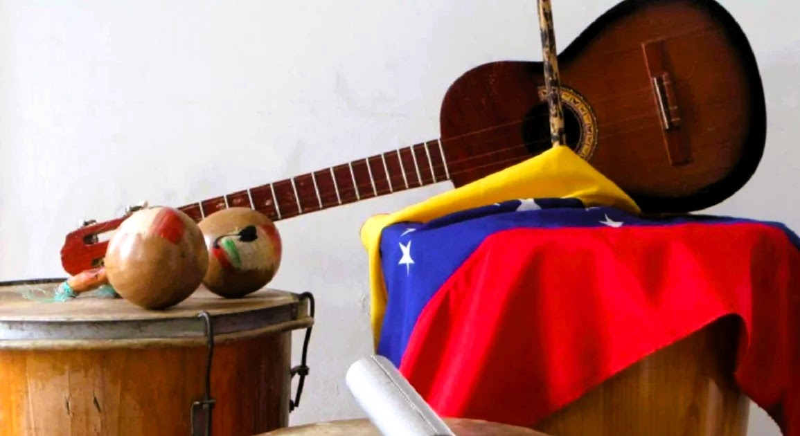
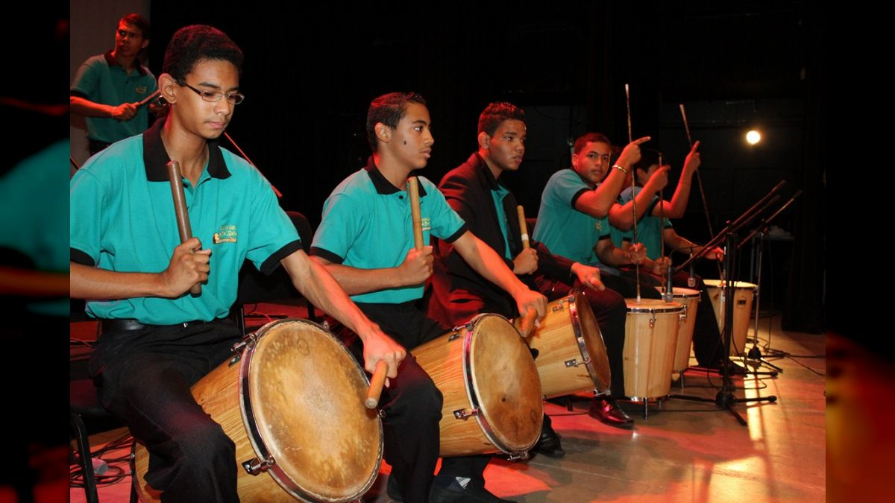
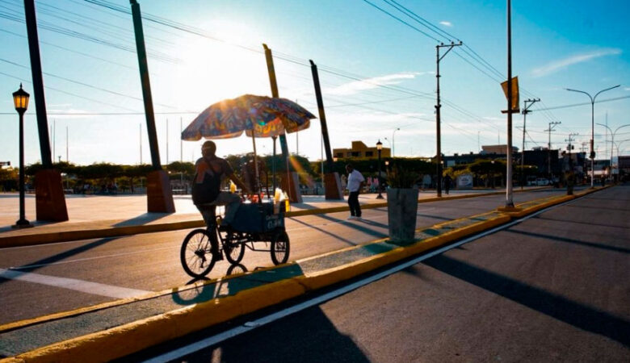
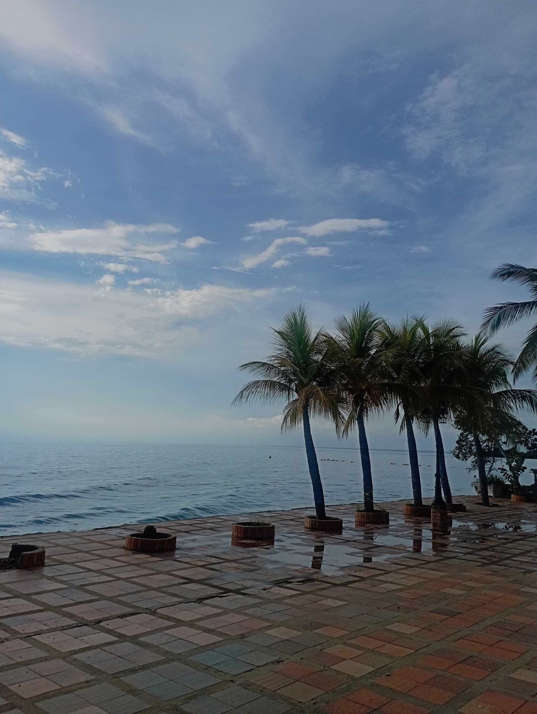

CABIMAS CULTURAL
DONDE LA IDENTIDAD FLORECE ENTRE SABERES, COLORES Y TRADICIÓN


×

×


🌍 Cabimas Explorador
Explora los lugares que dan vida a nuestra historia.
🎶 SONIDOS DE CABIMAS
Explora la identidad sonora de nuestra tierra

🎺 Gaita Tradicional

🥁 Tambor Cabimero

🗣️ Voces de Cabimas

🌊 Sonidos del Lago
ECOS DE NUESTRA TIERRA
Historias que resuenan desde cada rincón de Cabimas: voces, sonidos, memorias y emociones que construyen nuestra identidad cultural.

“Bolivar andaba en Bicicleta, una persona como todos nosotros.”
— Miguel, pintor

“La noche tiene vida en las calles de Cabimas”
— Nirxon Melean

“Un barco misterioso rompe las olas”
— Adalbelyn Añez
¡No te olvides de Explorar Cabimas!🔎
Descubre cada rincón de nuestra identidad: historia, cultura, sabores, arte y curiosidades que te conectan con lo auténtico.